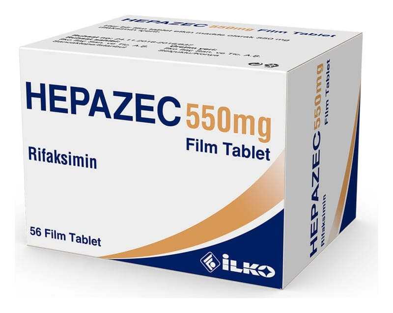

Hepazec 550 mg Film TABLET,56-Film-Tablet

Ne için kullanılır
KT · Bölüm 1HEPAZEC, 56 adet pembe renkli, oval, çentiksiz film kaplı tablet içeren blister ambalajda sunulmaktadır. HEPAZEC her bir tablette 550 mg rifaksimin içerir. HEPAZEC etken madde olarak rifaksimin içerir. HEPAZEC, bağırsağa yerleşen ve hepatik ensefalopati hastalığına neden olan bakterileri ortadan kaldıran bir antibiyotiktir. Hepatik ensefalopati; ani veya kronik karaciğer yetmezliklerinde karaciğerin temizleyemediği zararlı maddelerin kan yoluyla beyine taşınıp ruhsal gerilim, saldırganlık, bilinç bulanıklığı, kas problemleri, konuşmada zorluk ve koma gibi bozukluklara neden olmasıdır. HEPAZEC, karaciğer hastalığı olan yetişkinlerde belirgin hepatik ensefalopati ataklarının tekrarını azaltmak için kullanılır. İshal ağırlıklı karın ağrısı, şişliği ve bağırsak düzeninde değişikliklerle tanımlanan kronik mide-bağırsak bozukluklarının tedavisinde kullanılır.
HEPAZEC tek başına ya da daha yaygın olarak laktuloz içeren bağırsak yumuşatıcı bir
ilaçla birlikte kullanılabilir.